个人陈述（PS）
- ✓侧重个人经历与成长路径
- ✓解释申请动机与选择原因
- ✓展示个人特质与思考方式
- ✓突出独特性与价值观
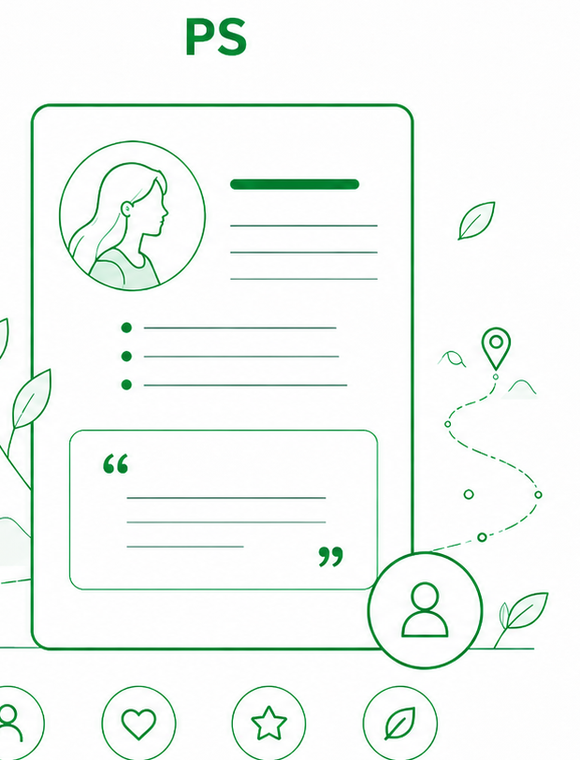
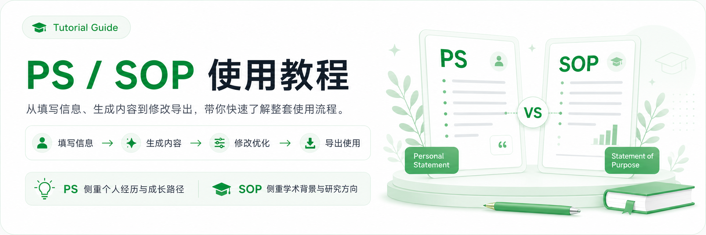
PS（Personal Statement）用于展示你的个人经历、成长路径与申请动机；
而 SOP（Statement of Purpose）更侧重学术背景、研究方向与未来规划。

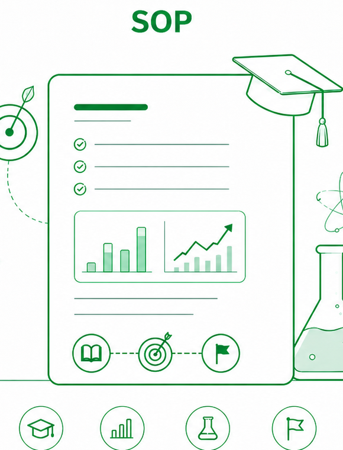
在开始填写前，先确保你的信息清晰、具体，这将直接影响生成内容的质量。
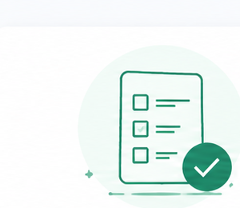
写清楚做了什么、用了什么方法或工具、取得了什么结果，以及你的具体收获。
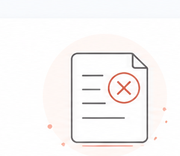
不要只写“我感兴趣”，尽量用课程、项目、实习或研究经历来支撑动机。
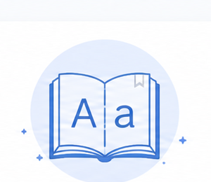
学校、课程、项目、职位、技术工具等名称建议用英文填写，系统识别会更准确。
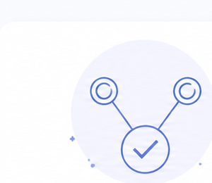
技能、项目经历、研究兴趣和申请方向之间，需要形成清晰的对应关系。
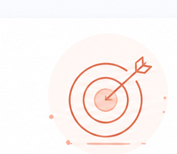
强调与你的申请方向最相关、最能突出你能力与潜力的经历和成果。
看看下面的常见误区和推荐写法对比，帮你写出更有说服力的内容。
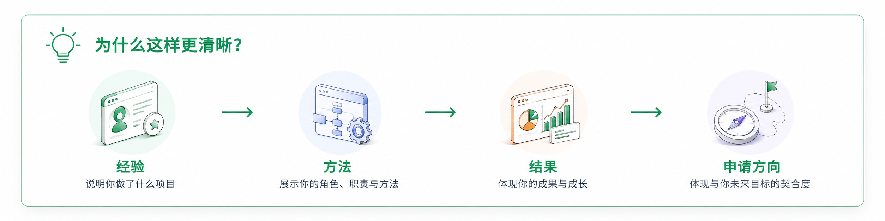
我做过一个 2D 平台游戏项目，主要负责团队协调、任务分配和进度管理，也参与玩法设计和页面规划。在项目过程中，通过用户调研收集反馈，对游戏体验和视觉效果进行了优化。同时我还参与了视频剪辑、动画制作和 Unity 游戏开发等数字内容与互动媒体相关项目。未来希望申请多媒体和互动媒体方向的研究生项目，继续提升自己的创造力与技术能力。
One notable project that inspired my pursuit of multimedia entertainment was working on XYZ Adventure, a 2D platformer game. I took on a leadership role in this project, which deepened my expertise in project management and technology implementation. My responsibilities included coordinating team tasks, creating work schedules, and monitoring progress throughout the project's lifecycle. Within the team, I defined key areas such as narrative brainstorming, mechanic design, and role assignments while establishing clear timelines to align with project milestones. During the execution phase, I introduced sprint reviews and issue resolution meetings to track progress and address challenges proactively. Utilizing a standard work breakdown structure supported by thorough documentation and progress tracking also enhanced transparency and accountability. Additionally, I conducted extensive user research to identify target audiences and incorporated their feedback to refine gameplay mechanics and visual elements, which helped me appreciate the importance of user-centric design in multimedia projects.
请根据自身情况如实填写以下信息，内容越具体，生成的文书质量越高。
生成结果页提供预览、修改与导出等功能，帮助你优化文书内容并生成最终版本。
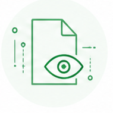
查看生成的文书内容，整体了解文书结构与信息。
评估文书是否需要优化，决定是否进行修改或直接使用。
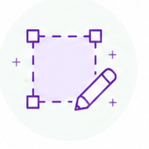
选择需要修改的部分内容，支持全文或局部调整。
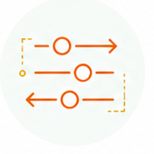
设定修改要求与方向，如语气、侧重点、结构等。
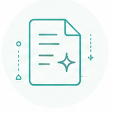
系统根据设置进行内容优化，生成更符合你需求的版本。
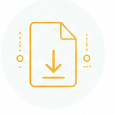
确认无误后导出最终文档，支持多种格式保存与使用。
专业导师为你优化文书表达、逻辑结构和内容深度，让你的申请更出彩。
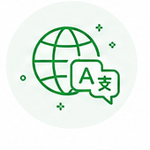
提升语言准确性与流畅度，减少语法与用词错误。
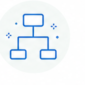
优化段落结构与逻辑衔接，使内容更清晰、更有说服力。
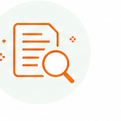
强化学术观点，补充专业视角与深度思考，提升整体质量。
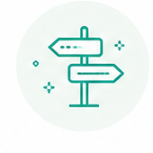
结合目标院校特点，突出匹配优势，提升个人竞争力。
每份材料
5-7个工作日
具体交付时间会根据总体材料数量及内容复杂度确定。
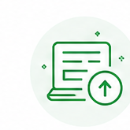
填写信息并上传材料。
了解目标并分配编辑。
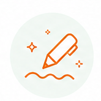
优化表达与结构。
多轮审核确保质量。
交付文档并提供反馈。
一键提交，专业团队为你服务
严格保密机制，保护隐私安全
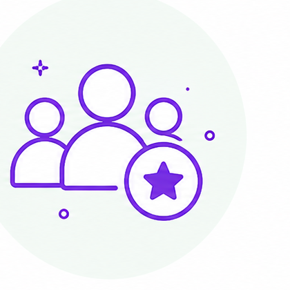
资深导师把关，助你申请更出彩